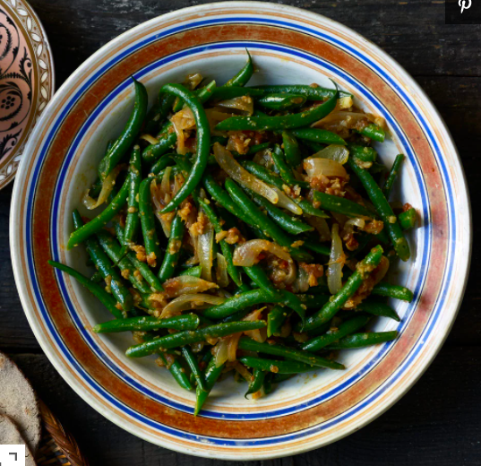

Fosolia (Ethiopian Green Beans)

History of the dish
Fosolia or "Green-beans" is a fantastic side dish in Ethiopian cuisine.
It is a kind of stir fry made with green beans, carrots and potatos.
Ingredients
- Oil
- 1 Large red onion
- 4 Garlic cloves
- A 'bag' of green beans
- One potato
- One medium carrot
Steps to cook
- Heat oil in a medium pot
- Dice Onion and Garlic
- Add diced onion to heated oil
- Cook until translucent
- While onions are cooking, remove ends of beans and break in half
- slice potatoes and carrots into sticks
- Add potato and carrot and cover pot to steam the vegatables
- Add Garlic and salt
- Let on high, stirring occasionally
- Spoon onto injera
- Enjoy!